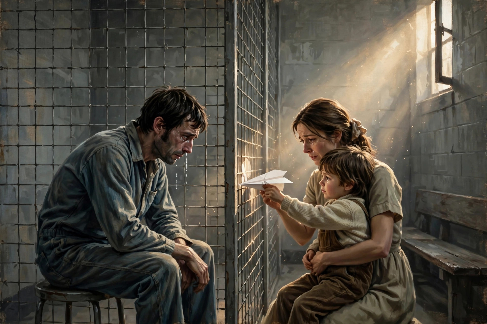
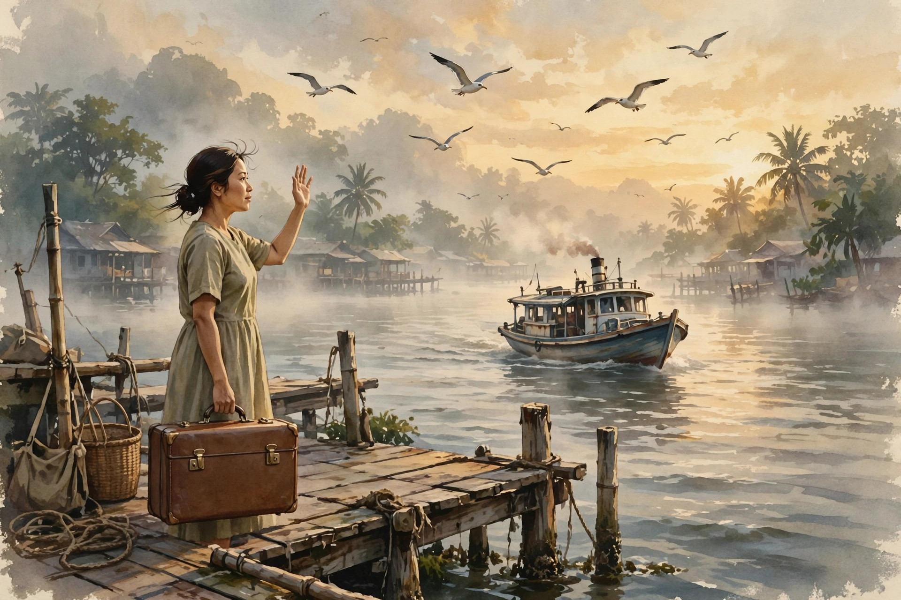

情义可以到达的高度
欢迎点击上方名片关注我，您的支持是我坚持原创的最大动力！
当你爱一个人，你最大能做到什么程度？请吃饭？送花？ 送奢侈礼品？有钱这些都不是问题。无论贫富、健康、年龄，一直欣赏、赞美TA，陪伴、照顾TA，真爱做到这程度也不难。在TA病重、危难时不离不弃，甚至不惜献出自己的生命？做到这个程度非常不容易，但现实中并不是绝对没有。如果设想一个人和另一个人萍水相逢，结下了深厚的情谊。这个人自己经济条件一般且上有老下有小，而在那个人不幸去世后，坚持十八年给TA的家人写信、寄钱（还有各种当地时令食物），给TA的家庭持续不断的精神和物质支持。这种情义，是普通人能够到达的高度吗？
估计很多人看到这儿，已经知道我在聊最近一部很火的电影了。对，就是那部低成本（无大明星）但因赚取无数人眼泪而获得巨大票房成功的《给阿嬷的情书》。
今天我不想讨论整部电影，只想随便聊聊（会涉及部分剧透）。先聊聊影片中那些感动我的片段及我个人的两处泪点吧。
南枝父亲遭当地恶霸勒索，要求低价转让客栈。被断然拒绝后，恶霸采取下三滥手段，纵火烧了客栈。当时南枝父亲醉酒不省人事，柔弱的南枝无力独自将父亲拖离火场，两人情况万分危险。这时外出的木生跑回客栈，打算抢救出自己几年打工的积蓄（他本打算用这笔积蓄回国与家人团聚）。听到南枝的呼救，他犹豫了两秒（真的就两秒），掉头就去找南枝。最后将南枝父女安全地救出火场。之后火势太大，再进火场已绝无可能。木生想着自己毁于一旦的积蓄，再想到归家的日子又得无限期延后，心中充满惆怅和愤怒。刚好纵火者企图逃离时被人发现，怒火中烧的木生追上前去痛殴了带头的混混，因此被捕入狱。除了因大火失去所有积蓄外，他还将面临两年的牢狱之灾。
南枝到狱中看望木生，给木生带来其妻淑柔的信。淑柔在信中依木生要求附了一张自己和三个孩子的合影。木生自豪地给南枝看相片，问他老婆是否漂亮。南枝衷心地赞叹淑柔漂亮，也夸了孩子们可爱。看得出，南枝是真心为木生高兴。但想到木生出于义愤为她和她爹出头而遭受牢狱之灾，她也感到十分难过。南枝读淑柔的信给木生听，读到孩子的一句话，说折了纸飞机送给爸爸，希望爸爸早日坐飞机回家。木生听了泪流不止，南枝也跟着落泪，同时把随信附的纸飞机拿出来交给木生。（这是我的第一个泪点）

木生出狱，告诉南枝自己要去跑船。南枝到码头送别，把准备好的崭新行李箱递给木生，告知准备了食物、药品等等。两人挥手告别，南枝目送木生远去。此处两人之间对话不多，但情谊尽在不言中。

南枝得知木生死讯，强忍悲痛，写下讣告，打算寄给淑柔。在讣告中南枝盛赞木生为保护同胞乡亲与歹徒搏斗，英勇献身的大义行为。虽然寥寥数句，但听了无不让人肝肠寸断。
南枝去银信局寄侨批时目睹一个人不幸丢失钱财，家人马上无依无靠的惨状。想到木生家人不禁心痛。她正犹豫该不该发出讣告，却先从银信局收到淑柔寄给木生的信。信中深情款款地说：七夕当夜，你衣锦归来，仍是少年模样……南枝看到此处泪流满面。于是她做了一个重大的决定，暂不告知淑柔他们木生的死讯，而由自己继续以木生的口吻给他们写信、寄钱。不知道当时南枝打算这么做多久，但估计连她自己都不敢相信，她坚持了十八年。直到发生一件不幸的意外（改变了两个家庭命运的邮差先生，你还好吗？），才和淑柔断了联系。
多年后，因为淑柔孙子晓伟的意外寻亲，一段尘封多年的往事又浮出水面。淑柔阿嬷得知木生早在1960年就去世，但1978年她才中断和“木生”的联系，那中间这十八年是谁给她写的信和寄的钱？经过晓伟的一番探寻，终于找到知情的故人，即南枝的养子泽华。泽华拿出一封信的底稿（写信打草稿是个好习惯），让淑柔有机会读到当年那封因故遗失的来自南枝的信（这里再次“致敬”那位不负责的邮差先生）。淑柔听完信后，表面平静，但我相信她此时心里却是翻江倒海的。从她接下来的举动就知道了。她让小儿子马上买机票，去泰国找南枝。
淑柔终于见到南枝了。但是，南枝已经痴呆了。淑柔温柔地喂南枝吃她带来的橄榄。南枝突然若有所思地问淑柔有没有收到她寄的咸肉。得到肯定答复后又问好不好吃。淑柔含泪说好吃。（这是我的第二个泪点）
我想影片最感动人的点不是木生和淑柔之间浪漫的短暂情缘和不幸的长久分离，而是南枝用惊人的一生付出展现的对朋友的知恩图报和至情至义。无论以什么标准衡量，南枝的所作所为都远远超出了一般友谊和报恩的范畴。因此，我在回顾电影时产生了一个疑问：南枝到底是否爱上/爱过木生？网上早有对此问题的热烈讨论。偏女权的朋友强烈否认这一点，主要理由是影片始终强调的是“情义”，而不是“爱情”。把大格局的情义理解为“小家子气”的爱情，是狭隘和直男思维。他们还将影片主创在路演时对此猜想的直接否认援引为强有力的证据。
经过一番对电影的回忆和分析，我偏向于认为答案是肯定的。先别忙批我“直男思维”，如果愿意可以先听听我的理由。
我的主要理由有两点：
第一，经历客栈被烧和木生不幸离世一系列事件后，南枝父女以摆摊为生，过得比较艰难。但在条件优厚的人上门提亲时，南枝没有接受。提亲方试图用她父亲受伤年老的困境来说服她仍遭拒绝，这表明她不结婚的意愿是十分坚决的。
第二，南枝后来收养了一个男孩，上有老下有小，同时还要坚持寄钱支撑淑柔一大三小的家庭。姑且不讨论现实中以南枝的经济状况同时养这么多人是否可行，南枝在此期间从来没有想过找一个男人作为经济依靠。这仅仅用纯粹理性的最高情义标准来解释是很难解释得通的。
一个身体健康的人一般只在有限的几种情况下会主动选择单身：1，心里有人，但无法得到那个人；2，曾经被爱伤过，不愿再爱；3，觉得单身比结婚的幸福感更高。我觉得南枝显然属于第一种情况。
不是说爱情就一定是盲目、非理性、不计代价的。但相较其他感情而言，爱情的确更倾向于非理性一些。如果某种至情至义、不计金钱、时间代价的行为，用常理讲不通，而又不愿赋予神圣化的色彩，那么爱情就是比较合理的解释了。所谓奥卡姆剃刀原则，就是这个意思。
所以我认为，南枝心底里对木生还是存在爱意的。即便一开始不是这样，至少在某个时间点这种爱情还是会产生的。只不过碍于传统伦理，南枝一直压抑这种感情，努力克制不表现出来而已。否则，她真的没必要单纯为报恩报到这个份上。
一家之言，欢迎讨论，拒绝人身攻击哈。
P.S. 提到讲述至情至义（包括爱情和友情）的作品，除了这部《给阿嬷的情书》外，我还推荐另两部作品：一部是《了不起的盖茨比》（小说和电影），另一部是盟约（Covenant）。感兴趣的话，可以看我以前写的两篇相关文章。
“为了爱梦一生”的男人
战火中的美好人性